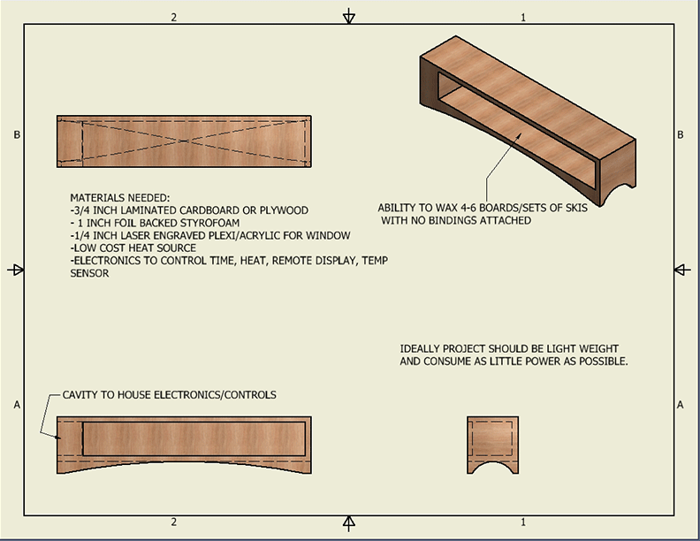

When using Git within a lab with numerous people you may run into an issue where others have committed files to the repository. In this case you will need to do a pull to become the master. To do this you simply enter "git pull" and enter your password. Git will download the files that are different or new and add them to your local drive. Then you can simply add, commit and push your update.
Part 2:Final Project Idea: Problem: I am an avid winter sports enthusiast, tinkerer, and information sponge. When I pick up a new hobby I like to learn all I can about the equipment including maintenance and repair. One of my main winter sports hobbies is snowboarding. With all the fun and rush of adrenaline that comes with making turns there is an abundant amount of upkeep with your snowboard equipment. “Tuning” is required on a regular basis, especially in the Mid-West where temperature change and conditions are not always optimal. Wax is one of the key ingredients to making sure your day at your local ski resort is an enjoyable one. Unfortunately I have more than one occasion where my wax has not fit the conditions due a drastic change in temperature. Temperature is a very important factor when it comes to wax, glide and speed on a ski run. Waxing can be a time intensive process with the potential for waste and damage to your snowboard. Goal: The hot box method is essentially putting your board in an oven for an extended period of time while controlling the temperature. While there are a few designs already on the market they are geared toward professional shops and cost thousands of dollars which put them out of reach for the average person who enjoys maintaining their own equipment. I would like to: -automate the process as much as possible -reduce the amount of material waste -reduce the “hands on” time it takes to wax -increase the quality of the wax application to the snowboard base. -control the temperature accurately -use minimal energy to complete the wax -Use lightweight materials -decrease the cost of the overall project to make it more accessible to the average person.
Initial Sketch of Final Project

This is StoneWork, a free, fully standards-compliant CSS template designed by TEMPLATED. The photos in this template are from Fotogrph. This free template is released under the Creative Commons Attribution license, so you're pretty much free to do whatever you want with it (even use it commercially) provided you give us credit for it. Have fun :)